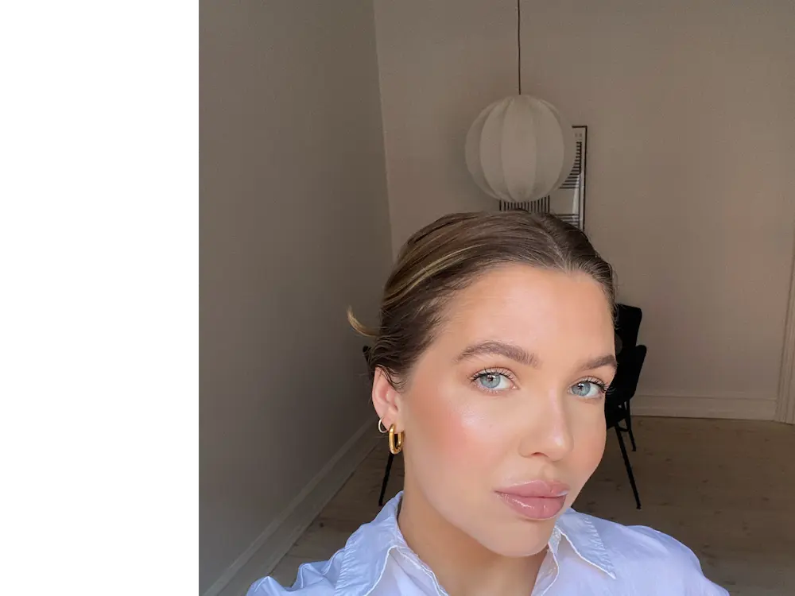

CV GENNEM 1. SEMESTER
-
TEMA 2 – Grundlæggende færdigheder for uddannelsen.
Wireframes – Styletile – Kontraster – Typografi – Filformater – Filstruktur – Webdomæne – Photoshop – XD – CSS – Visuel Studio Code.
-
TEMA 3 – Grundlæggende forståelse for samspillet mellem brugere og brugergrænseflader.
Research – Analyse – UI konventioner – Prototyping – Testing – Copy og Micro-copywriting – Surveys – Interviews – Pitch – Designprocesser.
-
TEMA 4 – Grundlæggende principper for design og programmering af digitale løsninger.
diagrammer – Skitseringteknikker – Kompositionsprincipper – Ideudvikling – Paper prototype – Spil design – Adobe Illustrator – Java script.
-
TEMA 5 – Grundlæggende indførsel i videoproduktion, samt design, programmering og produktion.
Tests (Ekspert, 5-sek, BERT – 5 skud regel – Storyboard – Interview guide – SCRUM – Procesdokumentation.